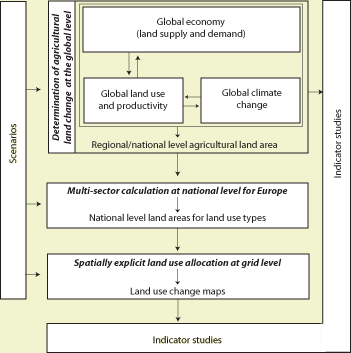
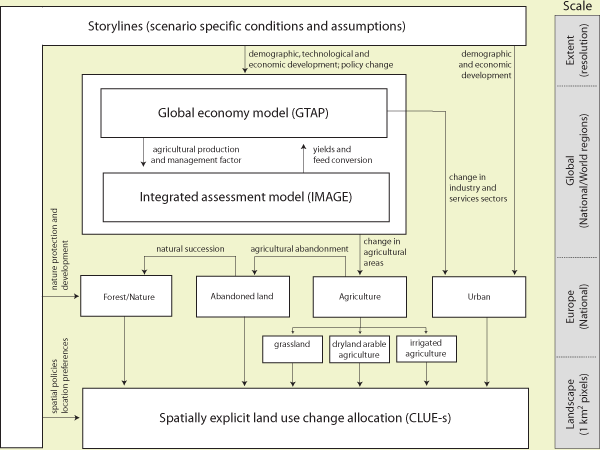

This process includes the specification of demographic and economic trends, world trade regulations, consumer preferences and policies that directly or indirectly influence land use. Many of these variables, such as the expected economic and demographic developments need to be quantified since these are critical input to the models. No single model is able to capture all key processes necessary to explore land use change in Europe at the different scales relevant to make a full assessment of driving factors and impacts. Therefore, a series of different models is used to account for the structure of land use change processes. The demand for agricultural land in Europe is mainly dependent on global developments in agricultural production, world trade agreements and changes in the economy of sectors outside agriculture. |
 Figure 1 Overall representation of the methodology |
Global models are used to account for the effect of changes at the global level on European land use. At the same time, the global-level assessment also allows an evaluation of the effects of changes in Europe on other parts of the world, including an assessment of the trade offs of European land use change for developing countries.
In this study a combination of a global economy model and a global integrated assessment model is used to capture the interaction between economy and natural resources. The world economy model calculates the economic consequences for the agricultural sector by describing features of the global food market and the dynamics that arise from the exogenous scenario assumptions. Regional food production and impacts on productivity (through intensification or extensification) as calculated by the global economy model are used as input of the integrated assessment model. This model is used to calculate the effects of land use change and climate change on yield level and simulates feed efficiency rates and a number of environmental indicators. Together, these global models result in an assessment of the agricultural land use changes at the level of individual countries inside Europe and for larger regions outside Europe (Eickhout et al., 2006; Meijl et al., 2006). At the same time these models also calculate changes in other sectors of the economy which are indirectly related to land use. This information is used in a series of simple models (Figure 1). For the industry and services sectors the changes in sector size are translated into land requirements for these sectors (Figure 2). For the natural and residential land use types the claims for land area are based on the demographic and policy assumptions as described in the storylines (Figure 2).
It is obvious that the global models are not able to make an assessment beyond the resolution of individual countries. Land use within a country is variable as result of local variations in social and biophysical conditions. Furthermore, the driving factors of landscape pattern are often region-specific as a consequence of different contextual conditions, specific variation in the socio-economic and biophysical conditions, and the influence of land use history and culture (Nassauer, 1995; Naveh, 2001). The actual downscaling of the national level changes to the landscape level was done by a spatially explicit land use change model at a spatial resolution of 1 km2 (Verburg et al., 2006).
Finally, based on the simulated land use changes a number of indicators were
calculated to summarize the results and assess the likely impacts. Some indicators
are based on the simulated land use changes itself, e.g., the ‘hot-spots’
of land use change, while others reflect the economic or environmental changes
resulting from the changes in land use.

Figure 2 Schematic representation of the modelling
procedure over different scales
Further reading / scientific papers: